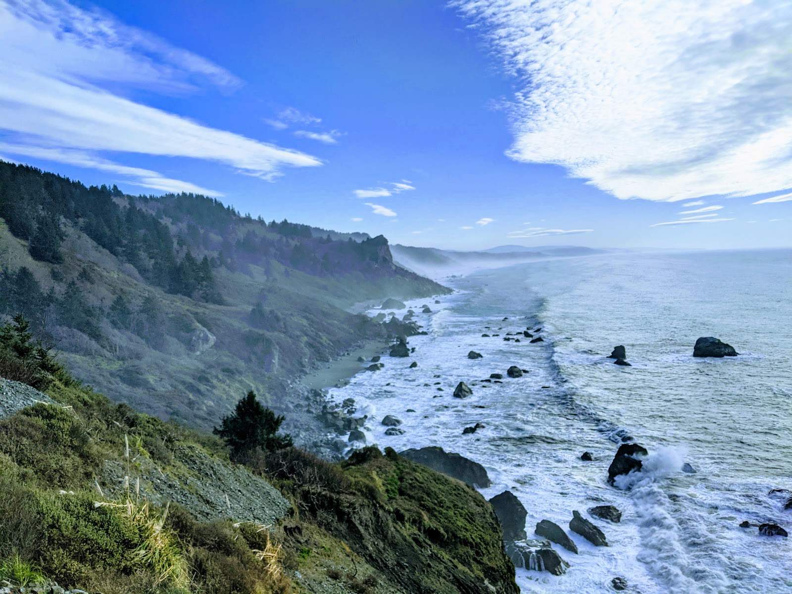
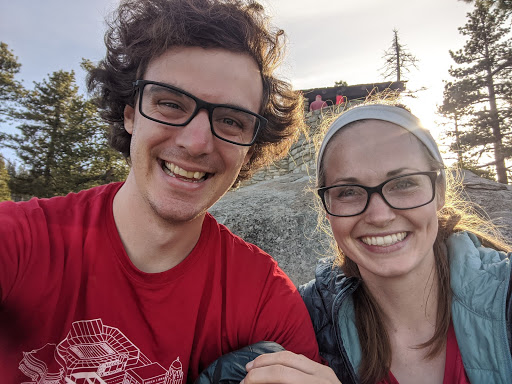
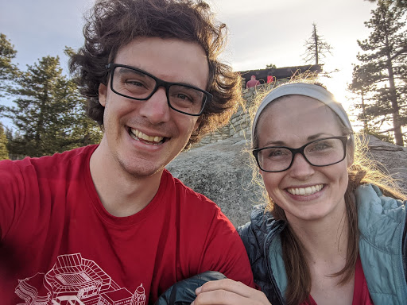

January
We made the best of President’s Day weekend and camped out in Redwood National Park, camping right along the river bank. One of our less-organized outings, we forgot some of the basics like matches and utensils, but overall it was a great trip!



 
